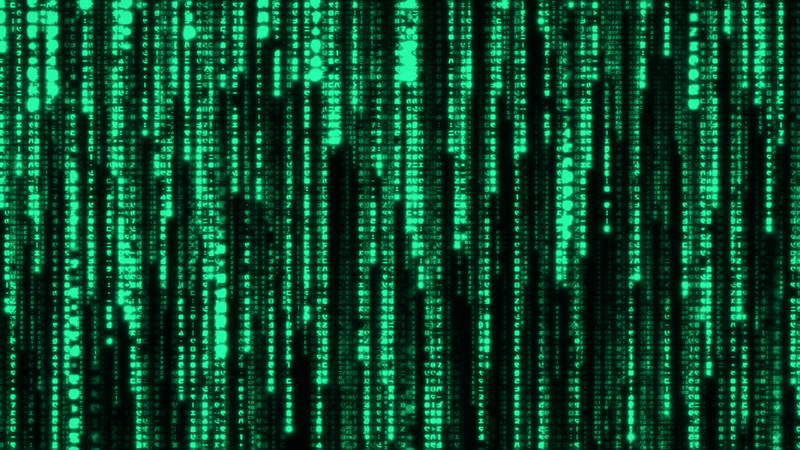
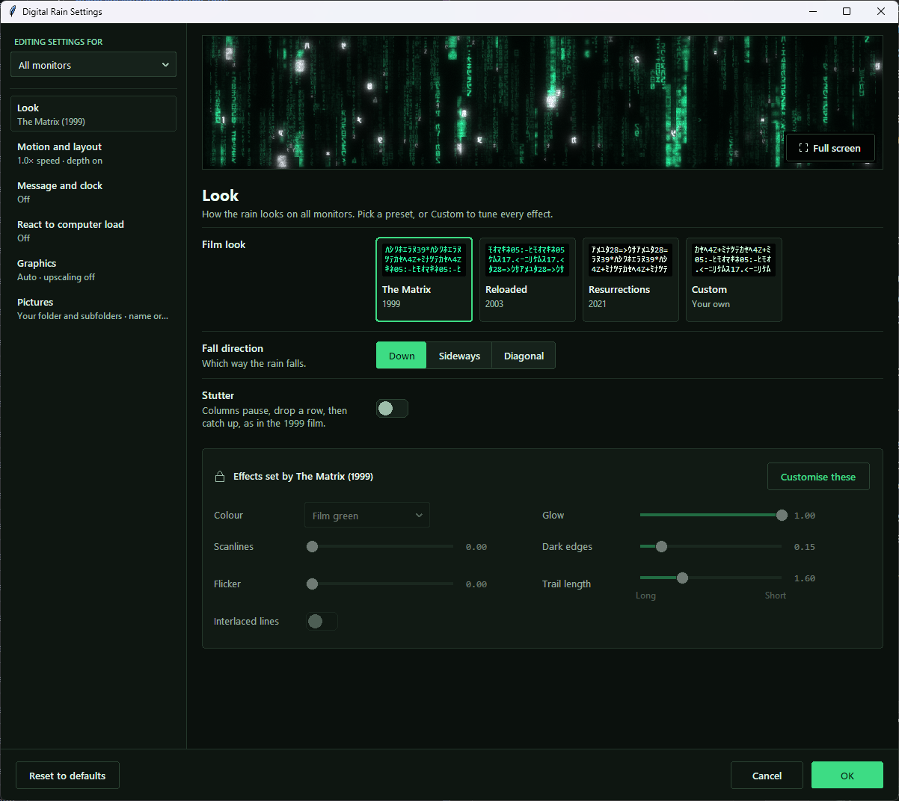

Recorded from the screensaver in its default look, The Matrix (1999).
Code rain for Windows and macOS, tuned against stills from the films.
Digital Rain is a free screensaver that recreates the falling code of The Matrix (1999), Reloaded (2003) and Resurrections (2021). Each look is measured from film frames, and every monitor you have runs its own rain.
An unofficial fan project, not affiliated with Warner Bros.
For Windows 10 and 11.
- Runs on
- Windows 10 and 11, and macOS 12 or later
- Download
DigitalRain-Setup.exeorDigitalRain.dmg- Graphics
- OpenGL 3.3. Without it, a slower software renderer takes over.
- Monitors
- Any number, each with its own scaling
- Licence
- Free and open source, GPL-3.0
The three film looks
There is no official specification of the rain, so each look is tuned against numbers taken from film frames: colour, brightness, glyph shapes and spacing.

- The green leans blue. Lit pixels measure hue 152 to 154° on the Blu-ray still.
- It uses the film's 57 glyphs, blocky katakana, digits and symbols, mirrored the way the film mirrors them.
- Light moves down one cell at a time at 24 frames per second, led by near-white heads.
- The film shows grain and no CRT lines, so this look turns scanlines off.

- Heads are mint green with no white leaders. Lit hue is 147 to 157° in all 13 stills from the 4K regrade.
- About 27 to 32% of the frame is lit, with a heavy band of bright tones.
- The 57 glyphs from 1999 have softer edges and sit on a slightly smaller cell.

- The background is a dark green of about
#030F03, with sparse pale lime leaders. - It uses 135 newer glyphs on square cells, 70 columns across the long side of the screen.
- The rain falls in three layers of depth, because near facades in the stills are 1.6 to 1.8 times the size of far ones.
What it does
A Custom look adds colours, scanlines and the other CRT effects if you want them.
Every monitor runs its own rain
Each display gets rain fitted to its size, position and Windows scaling. Plug or unplug one while it runs. One monitor can use a different look from the others.
The time, or your own words, in the rain
The rain can spell out the time or up to 24 characters of your text, then let them dissolve. Now and then, lines from the film type themselves over it.

Pictures drawn in rain
Point it at a folder of photos and the rain forms them one after another. A depth model keeps each picture in perspective.

Rain that follows your computer's load
If you turn it on, the rain speeds up or thickens as your processor or graphics card gets busier.
Settings with a live preview
Change a setting and watch it in the preview before you press OK. Nothing is saved until you do.

Install
On Windows you need no account and no administrator rights.
- Download and run
DigitalRain-Setup.exefrom the latest release, under Assets. It installs for your user only. - Leave Set Digital Rain as my screensaver ticked and click Finish. The Screen Saver Settings window opens with Digital Rain selected.
- Choose how long Windows waits, then click Apply and OK. Preview runs it now; any key, click or mouse movement ends it.
- To change the look, click Settings….
If Windows says it protected your PC, click More info, then Run anyway. The installer isn't code-signed, because that needs a paid certificate. The source is on GitHub if you'd rather build it yourself.
Other ways
On a Mac
Download DigitalRain.dmg from the same release and double-click Digital Rain.saver. It needs macOS 12 or later. It's signed ad hoc and not notarised, so if macOS blocks it, click Open Anyway in System Settings, Privacy & Security. To update, install a newer DigitalRain.dmg the same way, then run killall legacyScreenSaver in Terminal or log out and back in.
Build from source
git clone https://github.com/phabzlabz/digital-rain.git
cd digital-rain
python -m pip install -r requirements/requirements.txt
python matrix_saver.py /sNeeds Python 3.14 on Windows. .\build.ps1 builds the installer.
On a Mac, with Python 3.14 from python.org, bash tools/build/build_mac.sh --install builds the saver and installs it. The macOS page has the details.
Check your download
Compare the file's hash with SHA256SUMS.txt in the release, or run gh attestation verify DigitalRain-Setup.exe -R phabzlabz/digital-rain.
Uninstall
Settings, Apps, Installed apps, then Digital Rain, Uninstall. Your settings stay in %APPDATA%\MatrixRain until you delete that folder.
Documentation
- FeaturesWhat the screensaver does, and why each part is there.
- Settings referenceEvery setting, the values it takes and its default.
- Installing and uninstallingFull install steps and troubleshooting.
- Film researchThe measurements each look is built on.
All documentation, including the pages for contributors.